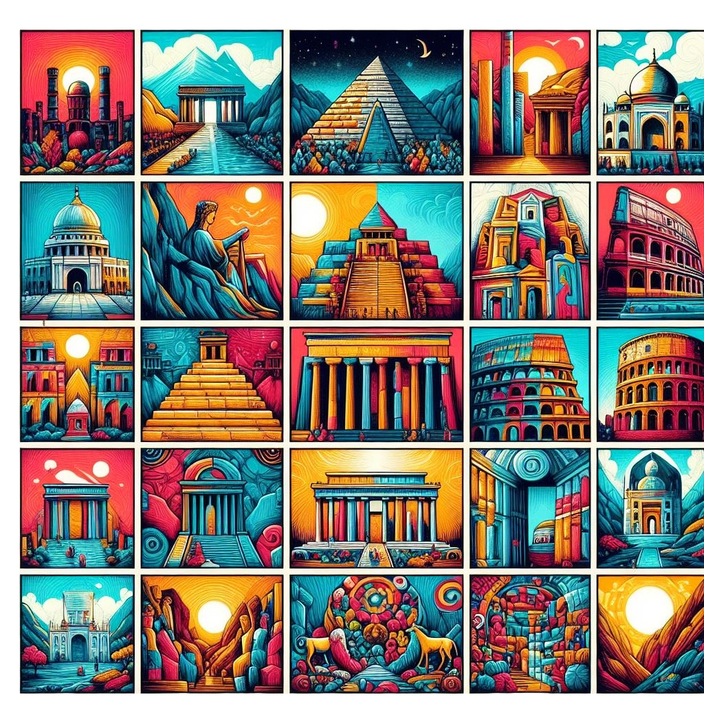

Background
In 2000 a Swiss foundation launched a drive to determine the New Seven marvels of the World. Given that the original Seven marvels list was collected in the 2nd century BCE — and that only one entrant is still standing( the Pyramids of Giza) — it sounded time for an update. And people around the world supposedly agreed, as further than 100 million votes were cast on the Internet or by text messaging. The final results, which were broadcast in 2007, were met with cheers as well as some hisses — a number of prominent contenders, similar as Athens’s Acropolis, failed to make the cut. *
The new wonders can be seen below
 Chichen
Itza
Chichen
Itza Christ the
Reedemer
Christ the
Reedemer Colloseum
Colloseum Great
Wall of
China
Great
Wall of
China Machu
Pichu
Machu
Pichu Petra
Jordan
Petra
Jordan Taj
Mahal
Taj
Mahal